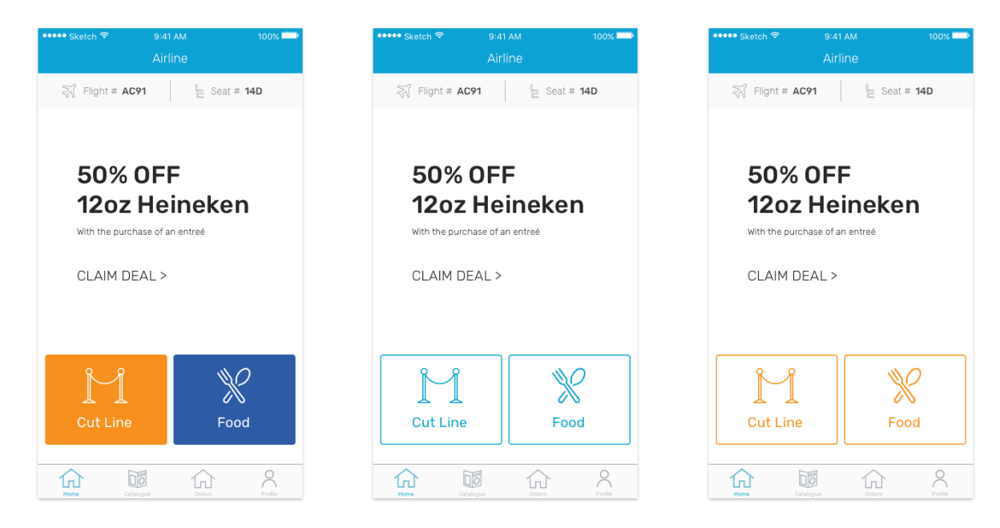
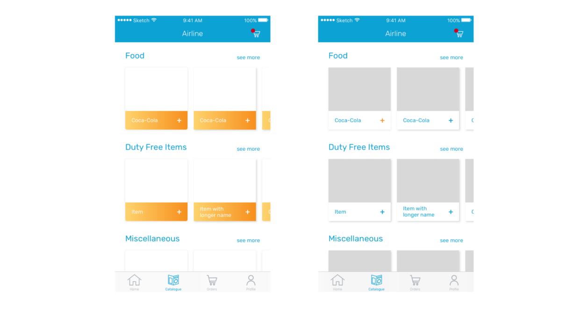
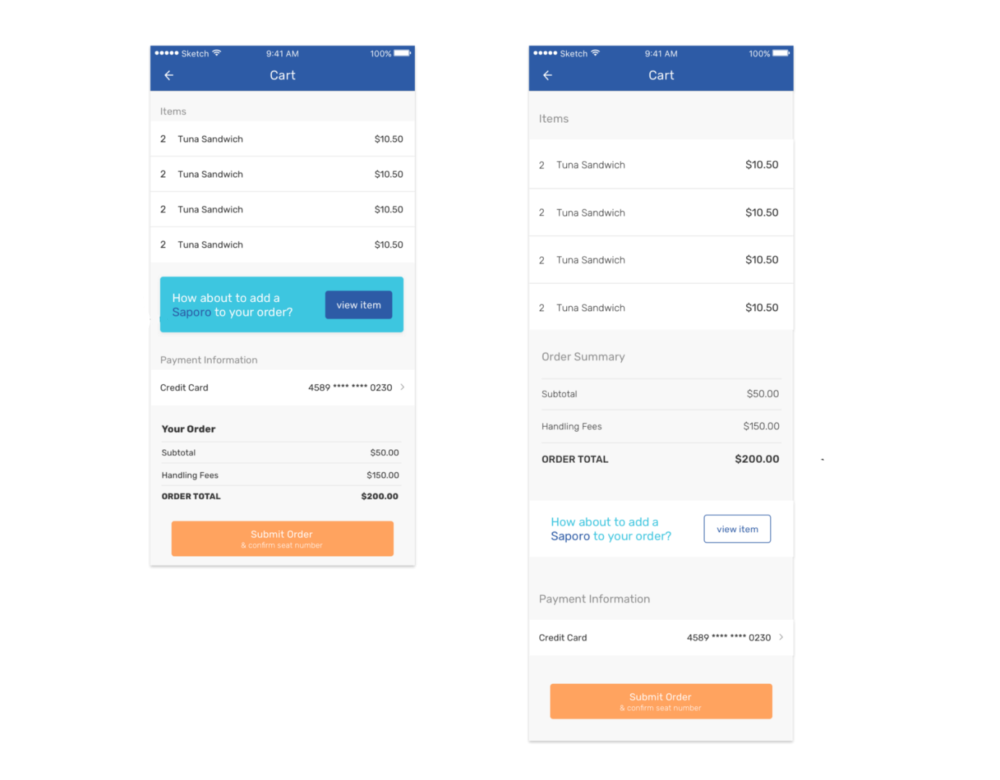
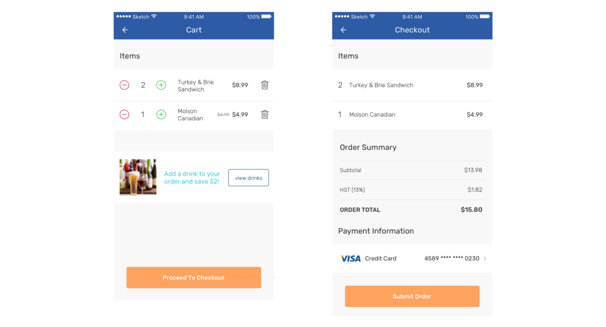

Case Study: In-Flight Merchandise Ordering
My First Experience in a Client Project
Context
As a UI/UX design intern at TribalScale, I had the opportunity to work on a real client project for 4 weeks with guidance from a lead designer. I was given wireframes and low-fidelity mockups to a higher fidelity along with developing a prototype for the client and developers to interact with. Additionally, we conducted remote usability tests and iterated based on user feedback. Finally, I handed the screens off to developers along with a style/assets sheet so they could start building easier.
The team consisted of 2 product managers, 2 designers, and 2 developers. We had weekly sync-up meetings with the client to present our progress, demo the prototype, and gather design feedback.
Product Description
The product was a mobile app which allowed users to order food and duty-free merchandise before or during their flight.
The app needed to have three distinct feature sets:
- Catalogue — for users to browse through products
- A Cart / Checkout Process
- Order History — for users to check on their current or past orders
Initial Screen Design Process
When I was staffed on the project, the user research and wireframes were already completed by the client and our team respectively. So, my job was to build high-fidelity mockups and a prototype based on the flows that were given to me.
I started with the home screen. My lead designer and I brainstormed some concepts and then combined our ideas to form the final version of the screen. Here were my concepts:
We did the same for the Catalogue screens. Here were my concepts:
Once we completed these initial screens, we had a better feeling for how the rest of the screens would look. I took full responsibility for the “Jump The Line” and Cart/Checkout screens, as well as iterating and redesigning the flows along the way.
Skip to the end of this article to see all the screens in the Marvel prototype.
Running Into Trouble – Checkout Screens
The biggest roadblock we ran into was figuring out the user experience of the cart and checkout screens. Our first solution was to have a single screen to display the customer’s cart and allow the customer complete their purchase. The screen also incorporated an up-sell section that offered a deal, and a section for users to choose their payment option. I mocked up two options — one prioritized the up-sell, the other prioritized the order summary and costs.
After user testing and bringing this to the client, I realized there was a missing step in the checkout process. Although I thought a single screen would decrease the cognitive load for users compared to having multiple steps, it had quite the opposite effect. Instead, users actually wanted a multi-step checkout. They wanted to see and edit their cart before confirming their purchase on the next screen. The reason behind this is because breaking up the process reduces the number of actions the user needed to take on each page. It would be too much for the user to handle if they had to edit their cart and choose their payment option and confirm their order on the same page.
With these insights in mind, I redesigned the flow and look of the checkout process. I made the cart editable, displayed any discounts, and separated the cart/checkout screens. Here’s what the process looked like afterward:
Lessons Learned
I had three main learning outcomes from this project:
1. Holistic View of the Product Design Process — this project showed me what the process is like of building a digital product for a client, from scratch.
2. How To Build A Production-Ready UI—from colours and spacing to Sketch techniques and proper iOS UI conventions, I am now equipped with a toolkit that will let me design mobile apps much faster
3. Gathering Feedback and Pushback—the client isn’t necessarily always right, but the user is. Every iteration, we used our prototype to gather feedback from users, and we were ready to present our findings to the client if they had conflicting feedback. It is often easy to succumb to client requests, but we must keep in mind that as a designer, our responsibility is to make the user happy. Communicating this to clients is extremely important if there are conflicting design decisions.
Marvel Prototype
I compiled a Marvel prototype without the use of the client’s branding for privacy purposes. Here it is linked below: